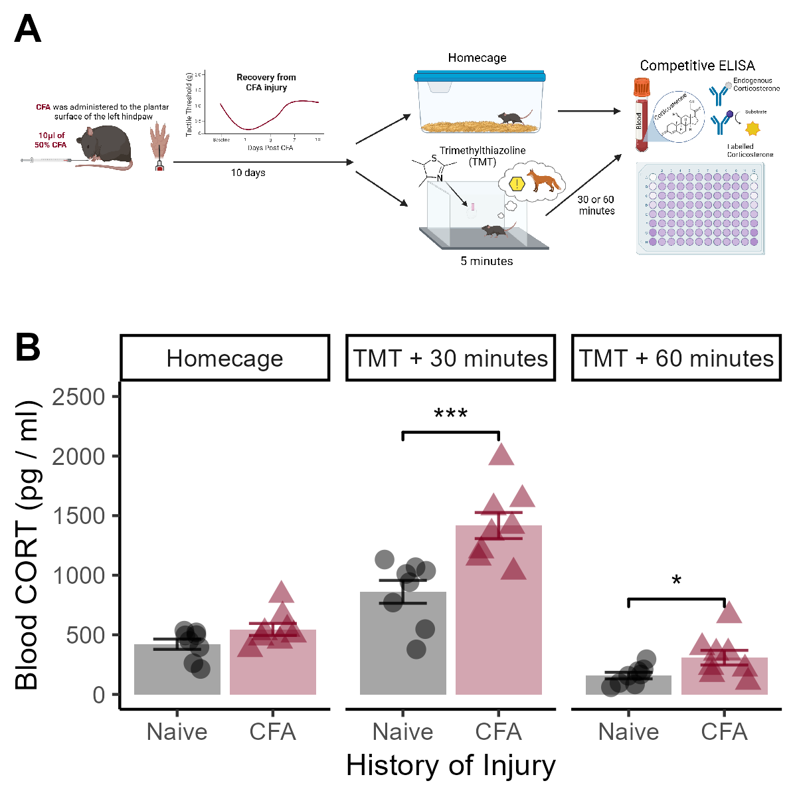

Figure 3

Figure 3. Mice with a history of injury have higher levels of blood corticosterone after TMT exposure. (A) Timeline of experimental procedures. Mice were injected with CFA, allowed 10 days for their injury to recover, and were then exposed to TMT for 5 minutes. Either 30 or 60 minutes after TMT, trunk blood was collected. (B) Although there is no difference in basal levels of blood corticosterone, CFA-primed mice exhibited higher levels of circulating corticosterone at both 30 and 60 minutes after TMT. Data presented as mean +/- SEM. * indicates p < 0.05, *** indicates p < 0.001.
Overall Effects of Stress and Timepoint
## Df Sum Sq Mean Sq F value Pr(>F)
## Stress 2 7000783 3500391 87.218 1.11e-15 ***
## Pain 1 919426 919426 22.909 2.12e-05 ***
## Stress:Pain 2 469721 234860 5.852 0.00573 **
## Residuals 42 1685623 40134
## ---
## Signif. codes: 0 '***' 0.001 '**' 0.01 '*' 0.05 '.' 0.1 ' ' 1Follow Ups: Effect of CFA at Each Timepoint
# Basal
a <- data %>%
select(c("ID","Pain","Stress","CORT")) %>%
filter(Stress == "Homecage")
t.test(CORT ~ Pain, data = a, var.equal = T)##
## Two Sample t-test
##
## data: CORT by Pain
## t = -1.8737, df = 14, p-value = 0.082
## alternative hypothesis: true difference in means between group Naive and group CFA is not equal to 0
## 95 percent confidence interval:
## -265.92402 17.94027
## sample estimates:
## mean in group Naive mean in group CFA
## 421.1277 545.1196Competitive ELISA results showed no significant difference in basal corticosterone levels between groups (p = 0.08).
# 30 minutes after TMT
a <- data %>%
select(c("ID","Pain","Stress","CORT")) %>%
filter(Stress == "TMT_30")
t.test(CORT ~ Pain, data = a, var.equal = T)##
## Two Sample t-test
##
## data: CORT by Pain
## t = -3.8218, df = 14, p-value = 0.001869
## alternative hypothesis: true difference in means between group Naive and group CFA is not equal to 0
## 95 percent confidence interval:
## -868.3244 -244.0529
## sample estimates:
## mean in group Naive mean in group CFA
## 860.6665 1416.8552# 60 minutes after TMT
a <- data %>%
select(c("ID","Pain","Stress","CORT")) %>%
filter(Stress == "TMT_60")
t.test(CORT ~ Pain, data = a, var.equal = T)##
## Two Sample t-test
##
## data: CORT by Pain
## t = -2.2291, df = 14, p-value = 0.0427
## alternative hypothesis: true difference in means between group Naive and group CFA is not equal to 0
## 95 percent confidence interval:
## -294.762456 -5.683044
## sample estimates:
## mean in group Naive mean in group CFA
## 157.9656 308.1883However, both 30 and 60 minutes post-TMT, CFA-primed mice exhibited significantly higher circulating corticosterone levels compared to pain-naive controls (t14 = 3.82, p = 0.0018, t14 = 2.22, p = 0.043, respectively, Figure 3B).